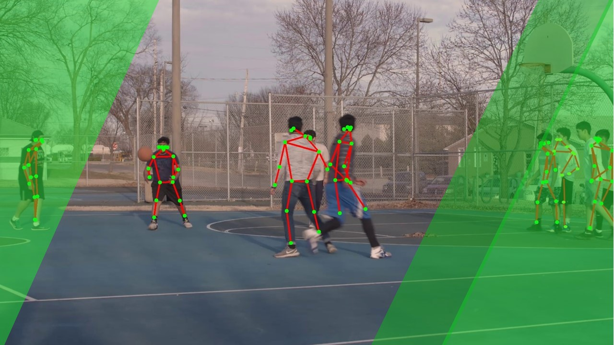
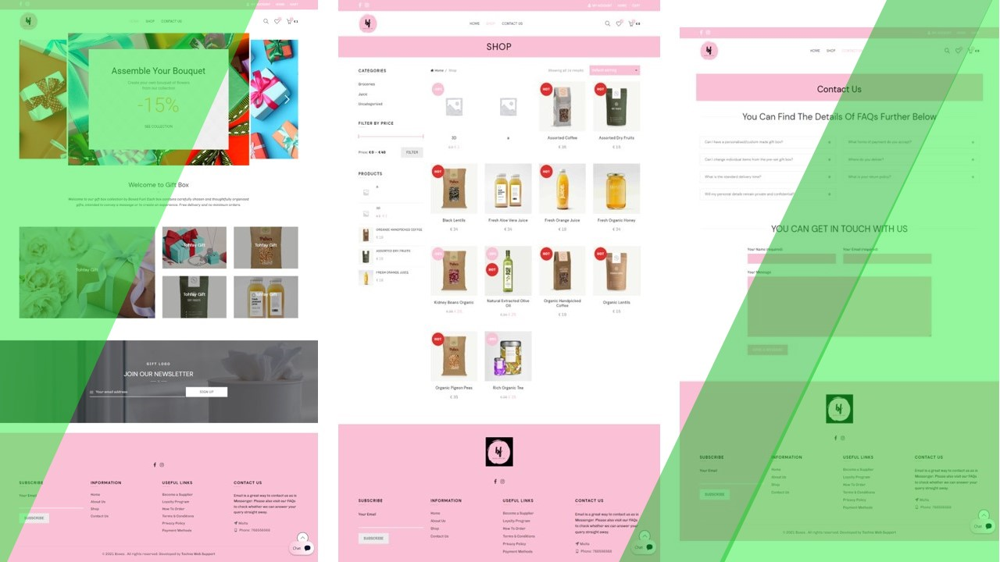
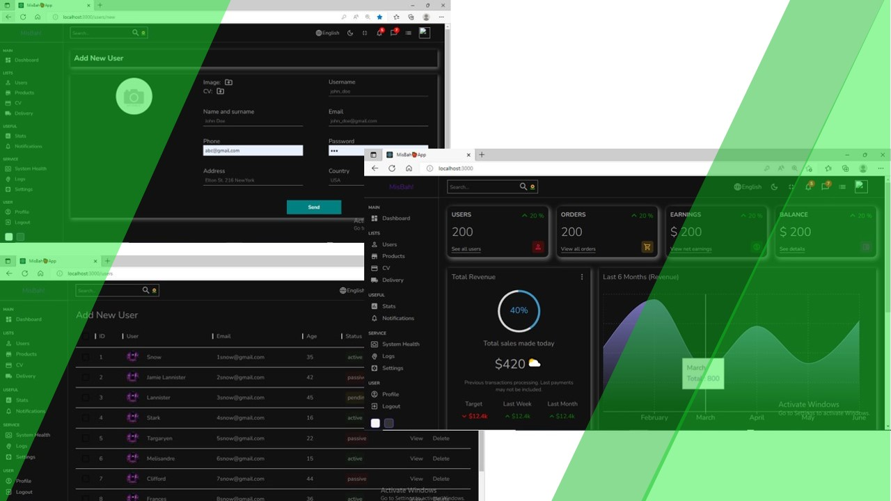
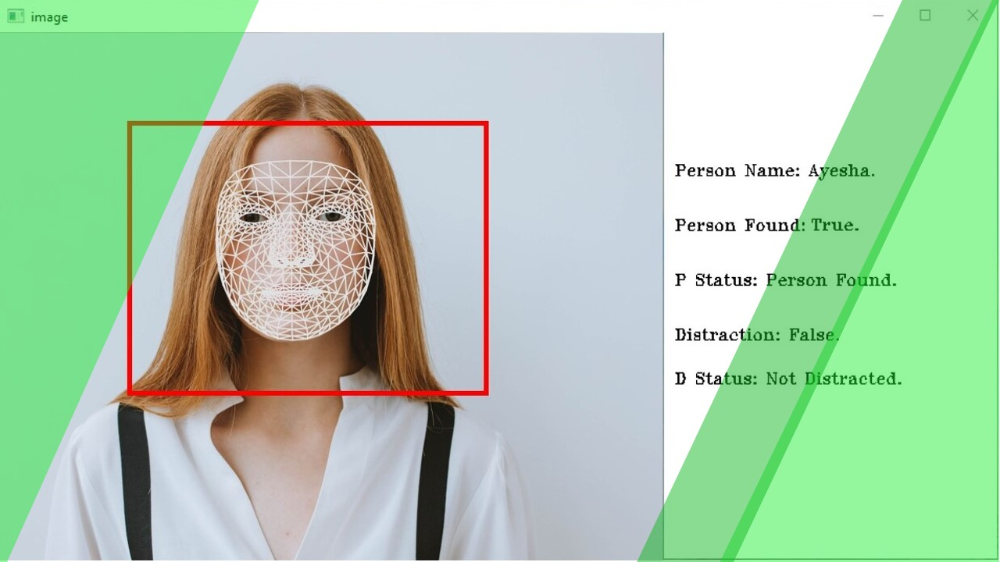
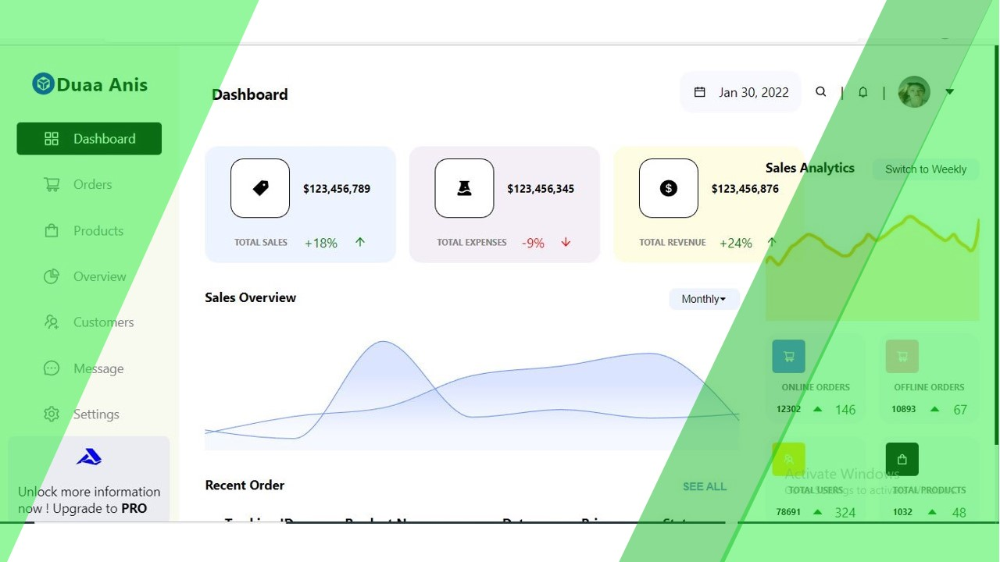
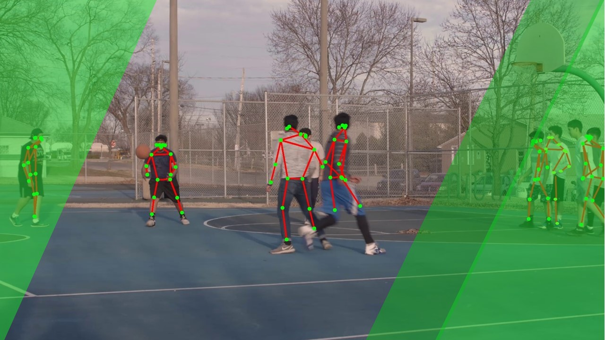
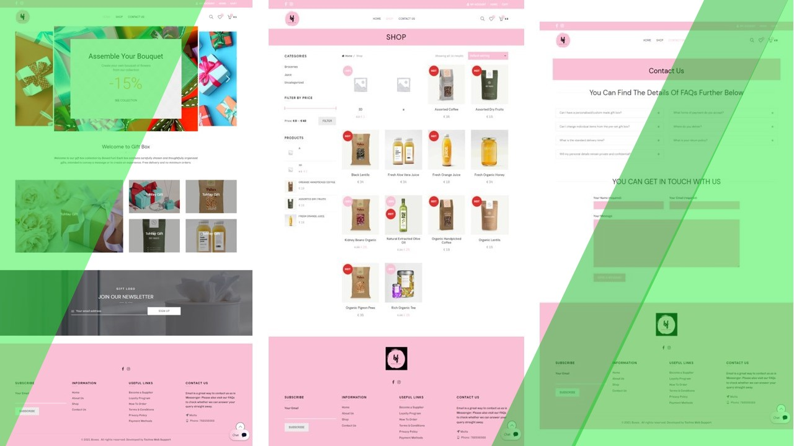
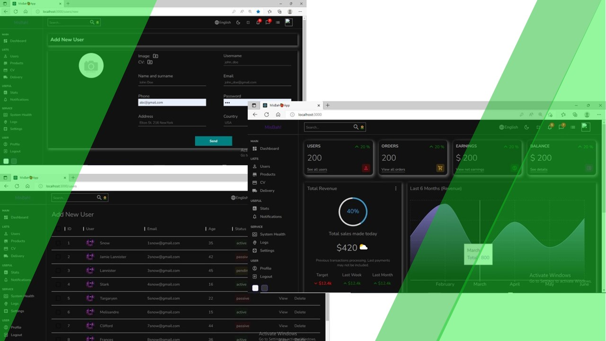
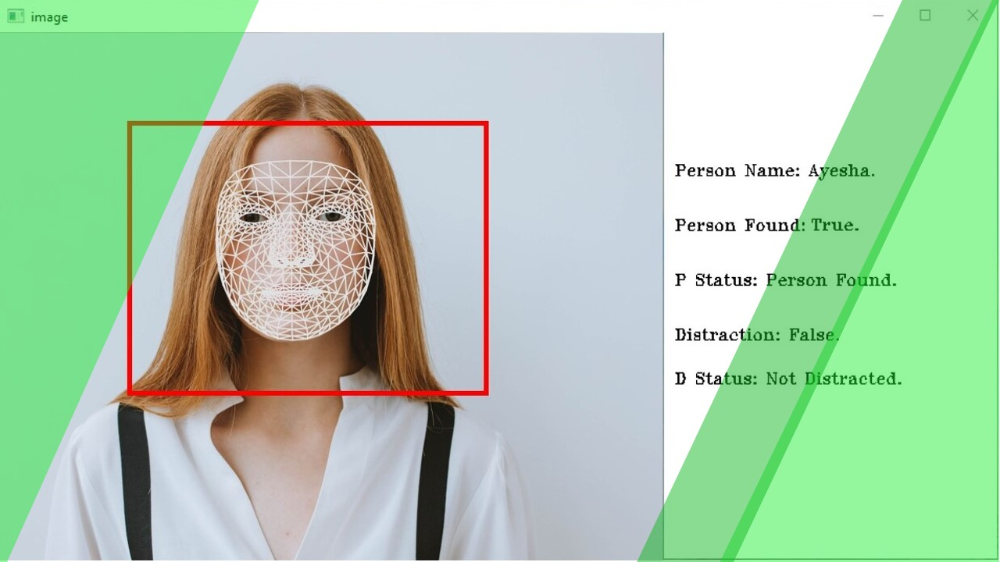
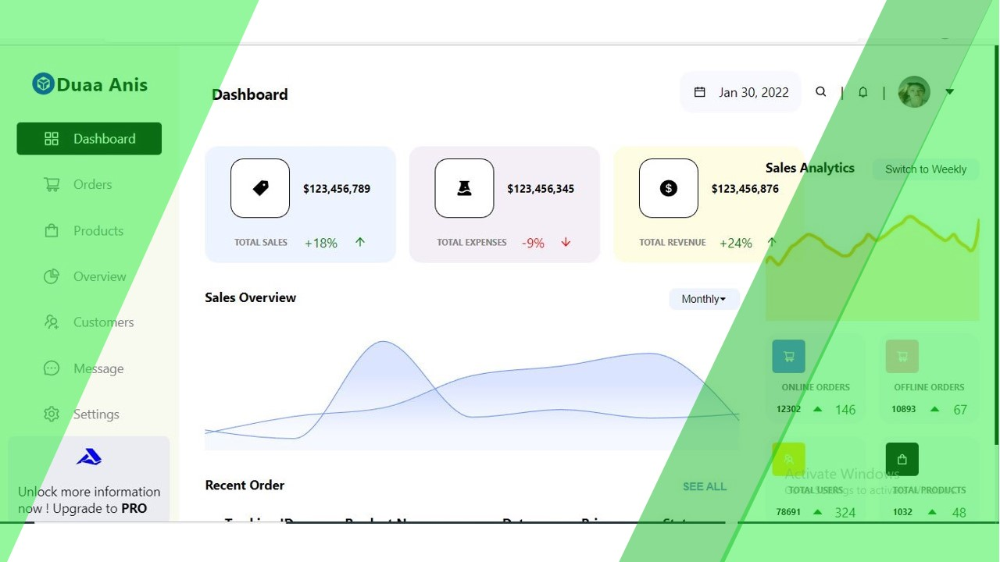

Initial Week Sees Drop in Speeding Incidents
Additional details can go here.
Target a Reduction in Lost Day Rate (LDR) Within One Year
Additional details can go here.
AI uncovered more hazards than traditional methods.
Additional details can go here.
More effective than manual safety inspections
Additional details can go here.
Immediate Impact on the Day
Additional details can go here.
Lowered Safety Risks Linked to Absence of Hard Hats
Additional details can go here.
We offer state-of-the-art AI-driven solutions aimed at transforming warehouse management. Our cutting-edge detection and inspection software delivers exceptional accuracy in inventory tracking, crucial for maintaining accurate stock levels and avoiding costly mistakes. By utilizing advanced algorithms, our system automates inventory processes, minimizing manual errors and boosting overall productivity. The intelligent algorithms can detect potential issues early, enabling businesses to take proactive steps and resolve problems before they grow. This forward-thinking strategy not only enhances operational efficiency but also ensures optimal resource allocation. Our innovative solutions are customized to help businesses streamline their warehouse operations, resulting in improved performance and a competitive edge in the market. Our AI-powered technology is more than just a tool; it’s a transformative solution that fosters operational excellence and positions businesses for sustained success.
It leverages artificial intelligence to provide groundbreaking solutions in warehouse management. Their advanced detection and inspection software allows businesses to automate inventory management, improve accuracy, and reduce operational costs. By delivering real-time data insights, it enables informed decision-making and optimizes warehouse operations for maximum efficiency. With its AI-driven software, it is transforming how businesses maintain a competitive edge in today's fast-paced market.
Achieve impartial insights by implementing ethical AI to eliminate discriminatory biases, ensuring fair and accurate outcomes.
Address trust and transparency concerns systemically, cultivating integrity in both physical and digital realms.
Protect individual and company data with Intenseye, ensuring confidentiality and anonymity.
Introducing our hero who is transforming workplace safety.

Description for Card 1
Pulse oximeters may be less accurate for individuals with darker skin due to how they measure light absorption. This issue highlights the need for improvements to ensure consistent accuracy for everyone.

The timeline for COVID-19 ending in Pakistan remains uncertain, as it depends on factors like vaccination rates, public health measures, and virus mutations. Continued efforts in vaccination and adherence to health guidelines will be crucial in controlling the pandemic and moving towards its eventual conclusion.

The future of COVID-19 in Pakistan depends on vaccination progress, public health measures, and new variants. Effective control will require continued vaccination, adherence to safety guidelines, and monitoring evolving challenges.

Approaching machine learning involves selecting the right algorithms and data for your problem, training models with relevant features, and evaluating performance to ensure accuracy. By iterating on these steps and refining your approach, you can develop effective machine learning solutions that drive insights and automation.

The new name of statistics is often seen as "data science." This modern term encompasses not just the collection and analysis of data but also its interpretation and application through advanced techniques such as machine learning and predictive analytics. Data science combines traditional statistical methods with computational tools to extract valuable insights and drive decision-making in a data-driven world.

Hoeffding's Inequality helps estimate the sample size needed for a machine learning model by providing a bound on the probability of deviating from the expected error. This method ensures that with a sufficient sample size, the model's performance will be close to its expected accuracy, minimizing the risk of large deviations.

In Pakistan, the incidence of thalassemia has risen partly due to the prevalence of malaria. The two conditions are linked because malaria can exacerbate the severity of thalassemia in affected individuals. As malaria continues to be a significant health issue, its impact on thalassemia rates underscores the need for integrated health strategies to address both diseases.

The clinical biochemistry pathway integrates various biochemical processes to diagnose and manage diseases. It encompasses the analysis of blood, urine, and other bodily fluids to evaluate metabolic functions, monitor treatment efficacy, and guide therapeutic decisions. This holistic approach ensures a comprehensive understanding of patient health through biochemical insights.
Diuretics are medications used to reduce fluid buildup in the body by increasing urine production. The logical guide to diuretics involves understanding their types—such as thiazide, loop, and potassium-sparing—each with specific uses and mechanisms. Proper use requires careful monitoring of fluid balance and electrolytes to ensure effectiveness and avoid potential side effects.
AI is enhancing radiology by improving diagnostic accuracy and efficiency, but it is unlikely to fully replace radiologists. Instead, AI tools serve as powerful aids, assisting radiologists in analyzing medical images and making more informed decisions. The expertise and clinical judgment of radiologists remain essential in interpreting results and providing comprehensive patient care.

In Python, matrix transposition is a fundamental operation in linear algebra, achieved using the .T attribute or the numpy.transpose() function. Transposing a matrix involves flipping it over its diagonal, switching rows with columns. This operation is crucial for various algorithms and data manipulations in scientific computing and machine learning.
In Python, raising a list to a power isn't directly supported, but you can achieve similar results by using list comprehensions or numpy operations. For instance, squaring each element in a list involves iterating through the list and applying the power operation to each item. This technique is useful for element-wise mathematical operations in linear algebra and data analysis.
The Modeler's Hippocratic Oath emphasizes ethical principles in data modeling, much like the Hippocratic Oath in medicine. It advocates for the responsible use of data, ensuring accuracy, avoiding bias, and protecting privacy. By adhering to these principles, modelers commit to creating fair, transparent, and impactful solutions while upholding the highest standards of integrity.
Vaccines are a crucial tool in preventing infectious diseases, backed by extensive research and evidence demonstrating their safety and effectiveness. They work by stimulating the immune system to recognize and combat pathogens, significantly reducing the risk of severe illness and transmission. Despite some controversy, the benefits of vaccines in safeguarding public health are well-established and widely supported by the scientific community.
Review the integrated analysis that highlights your past performance while forecasting future trends. This platform unifies safety teams globally, ensuring that everyone is aligned in awareness and action.
Proactive safety measures, also known as leading safety indicators, focus on preventing incidents before they occur. These indicators include safety training completion rates, near-miss reporting, and regular safety audits. By emphasizing these practices, organizations can identify potential hazards and promote a culture of safety, ultimately reducing accident risks and enhancing overall workplace safety.
Using machine learning algorithms to predict safety incidents represents a transformative approach that utilizes historical data and leading indicators to improve workplace safety. By examining extensive past incident reports, near-miss data, training completion records, and environmental conditions, these models can uncover patterns that traditional analysis may overlook. For example, a machine learning model could reveal that certain incidents are more likely to happen during specific shifts or under particular environmental factors, such as low visibility or high levels of employee fatigue.
Utilizing machine learning algorithms to predict safety incidents significantly enhances workplace safety and fosters a positive organizational culture. By harnessing historical data and leading indicators, companies can move from a reactive to a proactive approach to safety management. This shift facilitates the early detection of potential risks, allowing for timely interventions that can prevent accidents from occurring.
Establishing clear objectives for implementing predictive safety analytics is essential for effective safety management and fostering continuous improvement within organizations. A key objective could be to achieve a notable reduction in workplace incident rates, such as targeting a 20% decrease over the next year. This goal can encourage teams to prioritize proactive safety measures. Furthermore, enhancing training completion rates is crucial; organizations might aim for 90% participation in safety training programs to ensure all employees have the necessary knowledge to uphold a safe work environment.


Creating and embedding advanced algorithms into systems to tackle complex challenges is essential. This process involves designing algorithms that can learn from data, evaluating their performance, and integrating them into applications for real-time decision-making. Effective integration boosts efficiency, accuracy, and functionality across various industries, fostering innovation and enhancing outcomes.
Mastering machine learning and data analytics entails utilizing advanced algorithms and statistical methods to derive meaningful insights from data. This expertise empowers professionals to develop predictive models, identify trends, and make informed, data-driven decisions. By integrating machine learning’s capacity to learn from and adapt to new data with data analytics’ emphasis on interpreting and visualizing results, experts foster innovation and enhance performance across various sectors.

Customer-centric design and usability testing prioritize the creation of products that align with the needs and preferences of end-users. This approach focuses on designing with the user in mind, ensuring intuitive interfaces and smooth interactions. Usability testing assesses how effectively users can navigate and engage with the product, offering valuable feedback to refine and enhance the user experience. Together, these practices foster solutions that are not only functional but also enjoyable to use.


Projects Delivered
Valuable Partnership
Countires Served
Tech Expert
 








